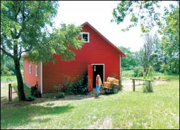
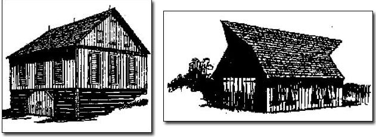

Barns have long been a cherished part of the American landscape as symbols of our agricultural heritage. Barns of the past spoke volumes about the farmers who built them: what types of crops and animals they raised, which foreign land they once called home, and how successful and prosperous they had been. But somewhere in the past half-century, the art of the barn was lost. Instead of building barns that reflected regional and occupational differences, many rural residents across America started erecting one-story, steel-clad buildings to house animals, crops, machinery, tools and vehicles. The era of beautiful barns seemed to have come to an end.
Today, though, there are signs of a barn-building renaissance. Several architects, designers and builders are selling plans and kits for traditional barns, and the Internet has made them widely available. Proper use of scale, proportion and simple details can mimic the grace of old barns and make new barns more appealing. If a new barn is in your future, don’t be afraid to expect more than just storage space. Building a barn that also looks great takes effort, but the results will add to the value of your property and be attractive, too.
The best news is that many of these traditional-looking barns are designed to be no more expensive, perhaps even less so, than metal buildings. “A well-designed barn, using wood siding, can be surprisingly affordable. The price can be in the same range as an ugly metal box if the owners are willing to get involved, even if it only is to manage the building project, saving the cost of a contractor,” says Craig Wallin, author of Small Barn Plans for Owner-Builders.
A few simple tricks can give new barns that classic feel. Z-braced barn doors and traditional window trim are the kinds of features that don’t cost a lot but that can make a world of difference in the aesthetics of the building. Roofs are also important. “Traditional barns were usually two or more floors, or at least a floor and a loft,” says small-barn designer Donald Berg, Rockville Centre, N.Y. “It’s the loft and the big roof that give a barn its character. Modern pole barns have shallow-truss roofs and no lofts. That gives them a flat, uninteresting look.”
Wallin agrees the roof makes the barn: “Features that make a barn attractive and traditional are a steeper pitched roof - at least an 8:12 pitch (the roof inclines 8 inches for every 12 inches of length), with generous overhangs.”
Cupolas (see photo) big enough to ventilate the barn are also classic barn features. Farmers used to take pride in designing cupolas that reflected their own individual style.
Here are some suggestions for building a barn that is traditional in style and economical in price:
Next, start looking at barn designs. Your best resource is the Internet, where you will find many sites with plans or kits for small barns. Several books are also available with barn plans and instructions (see “Barn-building Resources").
The type of construction you choose will depend on the barn’s style. The least expensive is the pole barn, now known as post-frame construction. Post-frame involves sinking posts into the ground, then connecting them horizontally with lumber. The poles serve as foundation, bracing and framework, and no excavation is required other than digging holes for the poles. This is the type of construction used for most metal buildings today. But it doesn’t have to be limited to shallow-pitched roofs and single stories; two stories are possible, too.
“My designs are different from most pole barns because I add a loft and match the proportions of traditional farm barns and carriage houses,” Berg says. “The construction is very similar, and so is the cost. In fact, if you include the storage space that you gain by having a loft, my barns are less expensive per square foot. However, without the lightweight truss-roof structure and with the added weight of the loft, my barns are limited in size. My designs are more suitable for homesteaders or families with three or four horses than for large commercial farms.”
Berg’s approach can work well for the home barn that doesn’t need to serve as a work space for a commercial operation. He says a single set of poles in a pole barn can be set 16 to 20 horizontal feet apart (the barn’s ultimate width) and still support a loft. Anything wider than 20 feet requires additional posts to carry the loft’s weight. The barn itself can be any length.
Another type of construction is called light-frame. It is is used in most residential construction. Frames of “two-by” lumber (2-by-4, 2-by-6) are built and attached to a foundation. This type of construction costs more than post-frame because it requires more lumber and a concrete foundation. Light-frame barns can be any size.
A third type of construction often used for barns is post-and-beam, also known as timber frame and requiring long, strong timbers. Vertical posts and horizontal tie beams are assembled into sections called bents, then raised and attached to a sill beam on a stone foundation. This is the source of the phrase “barn raising.” Timber-frame barns are the most expensive type of construction because the timbers are hard to come by, but several companies make kits you can assemble and raise yourself, with the help of many friends or a crane. Timber-frame barns can be small or large.
Choose your building materials with an eye towards aesthetics. Siding is the most obvious feature of the barn, and you can choose from wooden lap, wooden board and batten, composites such as T-111 (a brand of plywood siding), fiber-cement lap or panels, steel panels, or vinyl. “I’ve used T-111, HardiPlank (a brand of fiber-cement siding), rough sawn boards and even metal siding,” Berg says. “Any and all can look good if they’re on a well-proportioned barn.” The idea is to mimic the grace and style of a classic barn as much as possible, without sacrificing functionality.
“As wood was the siding of choice traditionally, barns tend to look better when they are sided with wood,” Wallin says. “We use a rough-sawn, ungrooved T-111, with wood battens, to provide a durable siding/sheathing that is weathertight and stronger than traditional boards.”
Roofing materials need careful consideration, too. Metal roofs are common, but you also can use composite shingles to match your house or wood shingles to mimic historic barn roofs.
Doors and windows also will have significant impact on the character of your barn. If you really want to stick with tradition, you can build your own barn doors, such as Z-braced Dutch doors or sliding doors, or you can purchase them from a horse-barn specialty manufacturer. Specialized doors are more expensive than manufactured residential doors, though, so if you need to keep an eye on costs, stick with a door that’s readily available.
Historic barns usually have fixed or awning windows that either don’t open or that are hinged on the top or bottom and open only slightly. If you want to be able to open your new barn’s windows and keep the barn free of wasps, birds and other critters, you are probably better off purchasing double-hung house windows with screens.
One of the most fetching features of an old barn is the cupola, often topped with a weather vane. Some companies that make metal barns put small ornamental cupolas on the roofs, but a real cupola functions as a ventilator, drawing warm air upward and releasing it outside.
Functioning cupolas on historic barns were big because they had to draw off the heat and moisture from a number of large animals, and hay. To keep that authentic look, be sure to get your cupola’s proportions correct. Berg, who has studied the proportions of old barns throughout the country, says a functioning cupola should be built to a ratio of 1 1/4-to-1 1/2 inches for each foot of roof line; for example, a 24-foot barn needs a 36-inch-square cupola.
Site your barn carefully. A hallmark of many American farms is that outbuildings are all placed exactly on the square, with walls at right angles or parallel to each other, Berg says. That neatness and symmetry is naturally appealing to the eye. If you want to vary from this, try not to put your barn too far away from your house or it won’t be convenient, but don’t upstage your house with the barn, either. Also, be sure to place your barn in convenient conjunction with drives, walkways and other outbuildings, and keep nature in mind by allowing for the growth of trees and the direction of water runoff on your property. Last but not least, don’t forget to evaluate what you’re doing to your view.
Experts say that you can save half the cost of a pole barn by doing the work yourself. If you have some building skills, you’ll find a pole barn is a good place to hone them because you don’t need every detail cosmetically perfect. (Click here for a great article, “I Built a Pole Barn for Under $3,000,” by Ellen Franklin in Mother’s Amazin’ Archive. Several books are also available to guide and encourage you in building your own barn from a plan; see “Barn-building Resources” - Mother.)
Wallin says that, unless you have experience in construction, you will probably appreciate the help of a professional to build the foundation and shell of the barn, both of which are fairly major undertakings. Kits are available from several companies; you can build one yourself or hire a local builder.
Another option is to hire a builder who specializes in timber framing and who will be able to get trees milled locally into lumber for the project. That was the approach taken by Mark Cain of Huntsville, Ark., who needed a barn for his flower and blueberry farm. He hired a local timber framer and a neighbor with a sawmill, and they found enough big trees on his land to mill into the huge timbers for the barn’s frame, plus boards for the board-and-batten siding. Then, Mark staged an old-fashioned barn raising with 30 people present to raise the first-floor timbers on his 24-by-48-foot, two-story barn.
If you decide to use a builder, choose carefully. Get recommendations from other people who have hired barn builders, and then contact two or three, and ask them to bid on your project. Builders who specialize in truss-roof metal buildings are certainly capable of building a custom barn. You may be surprised at the wide range of styles and custom design services available from national barn companies that are best known for their metal pole barns.
When you ask for bids on your building, be specific about materials and request that all siding, roofing, windows and doors be described. If possible, go to the building-supply yard yourself to approve the materials the builder has quoted. Be sure the builder specifies how long it will take to build your barn, including a reasonable completion date. Be as specific as you can when going out to bid; you don’t want to discover a miscommunication when the building is halfway built - that leads to cost overruns and bad feelings.
That brings us to the question that is probably foremost in your mind: How much will a new barn cost?
That’s a hard one to answer, because so many variables, from location to materials, affect construction costs. If you want to build a barn at your rocky mountainside retreat in Colorado, you could easily spend as much for site preparation as someone else spends on an entire barn built on a rolling Iowa meadow. Still, most people find ballpark figures more helpful than no-park figures, so consider these barn-building examples:
• Wallin says one of his 1,872 square-foot barn designs was built in 2003 for a materials cost of $18,000, or about $10 per square foot, which is a typical cost for other barns he’s built. Double that if you hire a builder.
• Berg says his barns cost on average $25 per square foot of ground-floor space (not including the loft) if built by a contractor.
• The barn we built last year cost $19,500 for a 768-square-foot footprint, or about $25 per square foot. Add in the storage space in the loft, and the cost drops to about $16 per square foot.
• Cain figures his barn, which is almost 2,300 square feet (including the second floor), cost about $20,000, or less than $9 per square foot. He cut costs by using his own trees for timbers and siding; allowing timber framers to use his barn as a demonstration project, which reduced his labor costs; and having friends over for the barn raising.
Building a barn on your property doesn’t have to be expensive or difficult. And when you think of the benefits - beauty, increased property value, functional work space and recreating a piece of American history - planning your barn can be a great investment along with just plain fun.
We had a small barn built last fall on our farm near Lawrence, Kan., to accommodate our cut-flower business. Our farm was settled in the 1860s, and we have an assortment of outbuildings, including a 30-by-40-foot dairy barn with a gable roof and a shed addition.
We wanted our new barn to fit in with our old buildings and provide a clean, bright new space for making bouquets, shelter for our walk-in cooler, and storage for tools and supplies. What we were seeking was a small building with modern amenities that still paid homage to traditional architecture.
After considerable research, we settled on a barn plan by architect and historic barn expert Donald Berg in Rockville Centre, N.Y. We chose his Chestnut barn with a two-story section that is 24 feet by 20 feet, with a 24-by-12, one-story shed addition, a third of which is left open as a porch for washing flower buckets.
We hired a local barn builder, Wayne Othick, who has a good reputation for building metal pole buildings and houses. We showed Wayne our blueprints, which required a pole building for the first floor with conventional light-frame construction for the second floor. He assured us that the design presented no problems for his experienced construction crew.
We chose fiber-cement lap siding, which mimics the cedar-lap siding on our farmhouse but is resistant to rot, termites and fire. Wayne warned us that it can be broken, possibly by a rock thrown by a mower, but we decided to risk it. We also chose a composite shingle roof to match the house.
We had hoped for authentic-looking barn doors but they were not locally available, so we settled for French doors, which we expect to replace eventually. When we do, we’ll go for a more traditional look.
We also used sash windows with window screens, and put a roll-up garage door in the back so we can drive our van right up to the cooler to load flowers when we go to market.
Now that we have had a season of using our barn for storage, bouquet making and flower drying, we are very pleased. It functions well, plus we get lots of positive comments from neighbors, including several who say they have put off building a barn because they just didn’t want a flat-roofed-style metal building. When we tell them that our classic wood barn cost no more than the ubiquitous metal pole barn, they’re impressed and eager to start their own.
- Lynn Byczynski
Wind vents on the roof of this 1833 corn barn, built near Bernardston, Mass., were to prevent the roof from blowing off; the plan originated in England, where America’s high winds were widely reported.
BARN ARCHITECTS
Donald Berg, A Better Plan
Rockville Centre, N.Y.; (516) 766-5585
www.aBetterPlan.com
Craig Wallin, Homestead Design
Port Townsend, Wash.; (360) 385-9983
www.homesteaddesign.com
The USDA offers many barn plans for a small fee; contact your local cooperative extension for more information.
BARN PLANS AND KITS
Barns, Barns, Barns
www.barnsbarnsbarns.com
BarnPlans, Inc.
Waimanalo, Hawaii; (877) 259-7028
www.barnplans.com
BGS Plan Company
Roseville, Calif.; (877) 752-6247
www.bgsplanco.com
Country Carpenters
Hebron, Conn.; (860) 228-2276
www.countrycarpenters.com
Shelter-Kit Incorporated
Tilton, N.H.; (603) 286-7611
www.shelter-kit.com
BOOKS
Barns, Sheds & Outbuildings
By Byron D. Halstead
Building a Multi-Use Barn
By John D. Wagner
Building Small Barns, Sheds & Shelters
By Monte Burch
Small Barn Plans for Owner-Builders
By Craig Wallin
|
 MATTHEW T. STALLBAUMER These vintage tobacco-drying barns, one from Virginia (left) and a “top hat” from North Carolina, were small and artfully built. Today, their styles make attractive design options for new barns. |
 ERIC SLOANE Small-yet-stylish new outbuildings that echo historic designs, such as this 1850s Ohio ice house, can be built surprisingly economically today for work space or storage purposes. |
ERIC SLOANE Cupolas from the Connecticut River Valley, where farmers who first realized the cupola’s ventilation benefits became renowned for their cupola styles. |
|
ERIC SLOANE Wind vents on the roof of this 1833 corn barn, built near Bernardston, Mass., were to prevent the roof from blowing off; the plan originated in England, where America’s high winds were widely reported. |
ERIC SLOANE The barn takes shape. |
LYNN BYCZYNSKI The finished barn reflects classic design elements yet is modified to accommodate current cut-flower business’ needs. |
|
LYNN BYCZYNSKI |
|
|